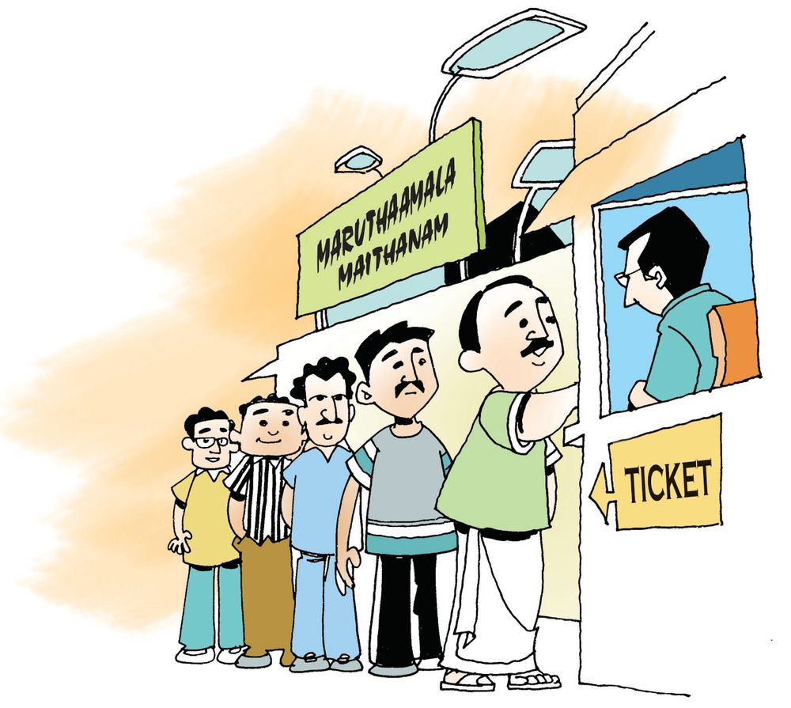

Bus math
Maruthamala punchayat bought five buses. The incomes are as given
below:
12 thousand rupee
notes 3 hundred
rupee notes 8 ten
rupee note s 5 one
rupee notes
1
10 thousand
rupee notes,
8 one rupee
coins
2
10 thousand
rupee notes 2
ten rupee notes
10 thousand
rupee
notes 3
hundred
rupee notes
120 hundred
rupee notes
3
4
5
What is the income from each bus?
1
1238 5
154
2
3
4
5
Page 75
Figure fig_ch06_p075_01 (Page 75)
Lets write these in words
12,38 5
Twelve thousand .......
10 , 008
Ten thousand ......
10 , 300
Lets spell them according to place nature
Ten thousand
Thousand
Hundred
1
2
3
12385
Ten
one
8
5
10008
10300
12000
10020
Now arrange them from the least to the greatest
Highest income
Lowest
After all expenses like bank refund, fuel and salary,11495 rupees was
left. What are the different ways of splitting this into notes and coins?
114 hundreds
9 tens
......... ones
5 ones
11495
......... tens
......... ones
100 hundreds
149 .........
5 .........
10 thousands
14 hundreds
11.........
9 tens
4 .........
5 ones
9 .........
5 .........
Check the other possibilities.
155
Page 76
Figure fig_ch06_p076_01 (Page 76)

Figure fig_ch06_p076_02 (Page 76)
Foot ball
Tickets for the football match are
sold through six counters. The table
below shows the details of amounts
got.
Find the amount got in each counter.
Rupee notes
1000
5 00
100
50
10
1
Total
1
8
6
10
6
10
−
12400
2
8
5
10
10
2
5
3
7
8
12
6
2
5
4
10
−
10
10
32
5
5
9
4
−
8
12
5
6
12
−
−
−
5
−
counter
Write these amounts in order from the least to the greatest in figures
and words.
Number
11525
156
In words
Page 77
Figure fig_ch06_p077_01 (Page 77)
Now try splitting them according to place value.
Number
1
place value
ten thousand
thousand
hundred
ten
one
2
3
4
5
6
Ten thousands together
The grama panchayat gave ten thousand rupees to each of the farmer
groups in the wards, for growing vegetables. The number of groups
in each ward is given in the table below:
Ward
Number of
groups
Amount got
(Rs.)
Total
(Rs.)
I
3
10000 + 10000 + 10000
30,000
II
6
III
7
IV
4
V
2
VI
5
VII
8
VIII
9
$
Ward IX has 10 groups. How much did they get?
This number is to be read as One lakh.
$
How many ten thousands are there in one lakh?
$
How many thousands?
157
Page 78
Figure fig_ch06_p078_01 (Page 78)
Write the amounts the wards got in order, from the lowest to the highest?
Self employment
Raju and Biju took out loans from the bank, under the self employment
scheme.
$
Raju pays back 100 rupees each day.
Pass book
Date
Talent Search
The mathematics talent search exam is held in six centers in the
panchayat. The children in each centers are given consecutive natural
numbers
The 24 children in the first centre are numbered from 10326. Write
their numbers in order.
There are 22 children in the second centre and the last number is 26006.
Write down the numbers of the others in order.
There are 18 children in the third centre and the first number is 32008.
What is the last number?
The numbers given in the fourth centre are from 42199 to 42218. How
many children are there in this centre?
The 10th number in the fifth centre is 54038. What is the first number?
One number in the sixth centre is 66665. It is 8 th from the first and 11th
from the last. What are the first and the last number? How many children
are there in this centre?
Paddy fields
The panchayat honoured the
6 paddy field committees
which cultivated more than
20 acres. The amount of
paddy they produced are
given below :
Paddy field
Amount of paddy
1.
13 tons, 4 quintal
2.
3.
4.
Fourteen thousand two hundred and eighteen kilograms
What is the total amount produced in kilograms?
How many tons is it?
Which field produced the most? How much
is it?
The committees were ranked according to
production. The one ranked first was given
a gift of 75000 rupees. Each of lower ranks
got 10000 rupees less than the just higher
one.
How much did each committee get?
Lets do !
In what all ways can we split 28549 ?
2 ten thousands 8 thousands 6 hundreds 4 tens 9 ones
. Thousands, 549 ones.
Are there other ways?
28 5 49
Like this write the number 30735, 43087
Five digit numbers
$
60
2
70
400
4000
3
4
30
700
2000
30000
20000
50
3
60000
900
7
6000
Choose five numbers from those above and make a five digit number.
30000 + 2000 + 400 + 2 + 3
..................................................
..................................................
..................................................
..................................................
=
=
=
=
=
32405
Magic square
Use the nine numbers 51000, 52000,
53000,
59000 to make
a magic square.
161
Page 82
Figure fig_ch06_p082_01 (Page 82)
Splitting up
Choose numbers from the rectangle to split the numbers below it.
30000
3
Given below are the facts Unnikuttan got from the
newspaper to read in class. Write in figures, the
numbers given in words.
$
The stadium was full. Forty eight thousand two
hundred and seventeen people watched the game.
$
Bye-election, majority is twenty four thousand
eight.
$
Seventy thousand rupees granted from relief fund.
$
For Onam, thirty two thousand five hundred thirty kilograms of sugar
granted.
$
Increase of eighty four thousand, nine hundred eighty eight rupees
in tax.
To the top!
See how we start from 28000 and
add 2000 again and again to reach
40000.
40000
38000
37500
35000
36000
30000
35000
25000
34000
32500
32000
20000
30000
30000
27500
15000
28000
10000
25000
Starting from 10000, can you add the
same number again and again and
reach 40000? How about starting
from 25000?
Five digit numbers
$ Write the five digit numbers you can
make using 2, 6, 7, 9, 3 without repetition?
$ How many five digit numbers can be
made using 4, 5, 6, 8, 9?
$ What if we use 0 instead of 8?